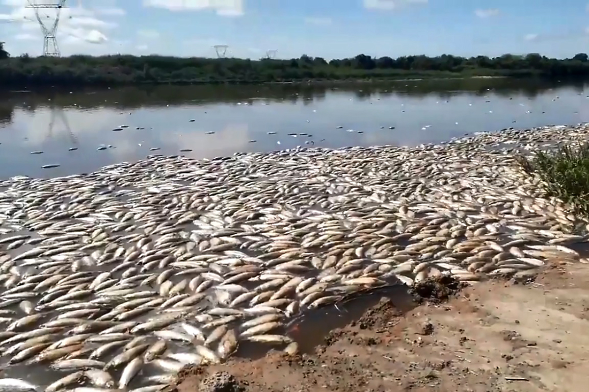

Transformaciones en los modos de enfermar y morir en la región
agroindustrial
Accede al informe
Presentación del Dr. Andrés Carrasco Cámara de Diputados 2010:
Efectos del glifosato en anfibios.
Prueban que la mezcla de agroquímicos produce un compuesto más
tóxico

Accede al informe